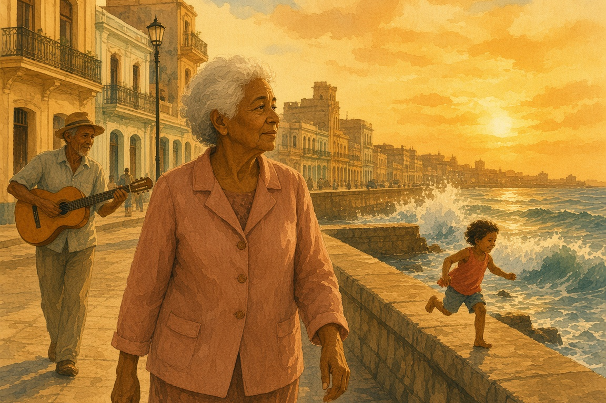

- A2
- Un lugar de la ciudad
Una vuelta por el Malecón
Ocho kilómetros de muro, sal en la cara y una conversación junto al mar.
Texto
Por la tarde salí a caminar por el Malecón de La Habana. Es un muro largo junto al mar, de cerca de ocho kilómetros. La construcción empezó en 1901. Hoy es un lugar para hablar, sentarse y mirar el horizonte.
Caminé despacio. El agua golpeó el muro y un poco de sal llegó a la cara. Vi a un hombre con una caña de pescar, a dos amigas en el borde y a un niño que corrió detrás de una ola. El sol bajó y las fachadas se pusieron de color ocre.
Un señor a mi lado dijo: «Aquí la gente viene cuando quiere pensar, o cuando no quiere estar en casa». Yo no dije nada. Me senté también, con los pies hacia el mar. En mi país hay paseos junto al agua, pero este tiene un ritmo distinto: lento, abierto y lleno de voces. Un músico tocó una canción breve, y después volvió el sonido del mar. Esta noche voy a volver un rato. No necesito un museo para entender La Habana. A veces basta un muro, una conversación y el agua.
